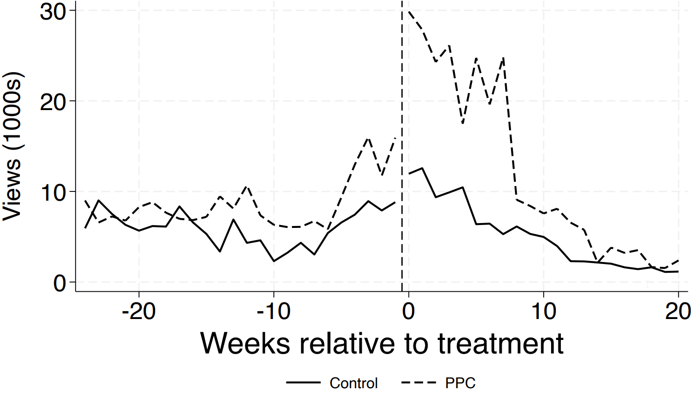
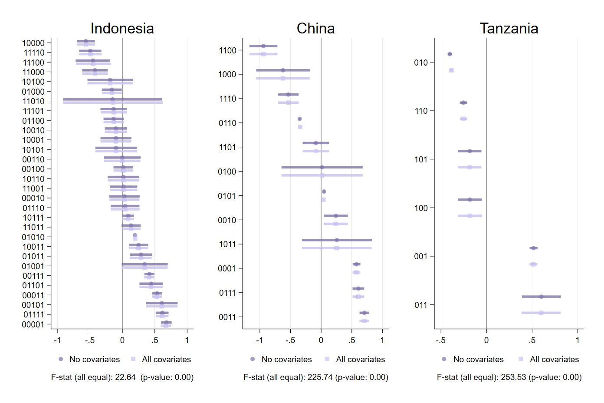

Teaching team
Unit convenor: Associate Professor Emilia Tjernstrom
Email: emilia.tjernstrom@mq.edu.au
Consultation hours: Tuesdays 9 - 10 (both in-person and Zoom)
A little more about me:



I study how policies work & for whom
I apply and develop econometric tools to understand treatment effect heterogeneity
Teaching team

I design & run large-scale RCTs in developing countries

Salary prediction game
Ten fields of study, for each one: what do you think the typical new graduate earns per year?
- Open your portal link (in welcome email)
- OR scan the QR code & enter your ID
- Move the sliders to your best guess

Learning outcomes
2

Specify, estimate & interpret a regression model
Answer: Did it work?
| Yields, enrolled vs. control | Total maize output | |
|---|---|---|
| (1) | (2) | |
| Enrolled | 295.43*** | 264.90*** |
| (37.23) | (85.73) | |
| Control group mean | 1128.39 | 1082.38 |
| Observations | 682 | 682 |
Learning outcomes
5
Use econometric software to solve econometric problems
What does this mean in practice?
Use software to run econometric analyses

Build practical skills!
Each week, you should…
1 Read the assigned textbook chapter + any other assigned readings
2 Watch the Essential Concepts videos (the lecture builds on them)
3 Attend the live lecture